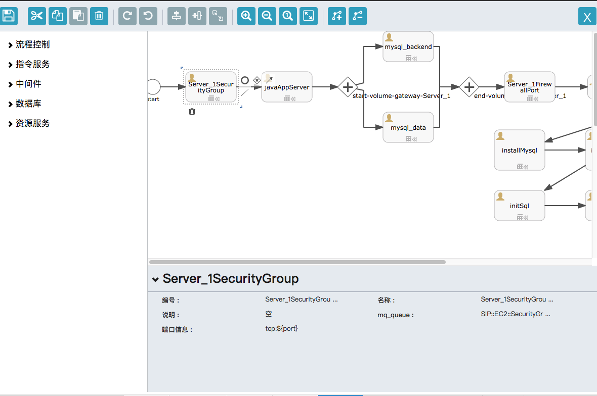
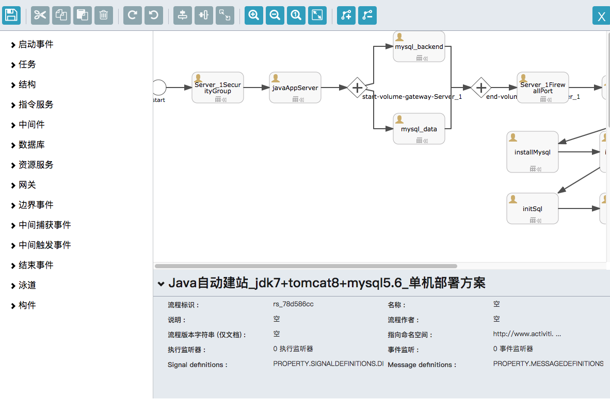

SipRS的编排是基于BPM2.0的工作流规范，所使用的设计器是开源项目activiti提供的设计器。用户对于这款设计器的使用可以参考BPM2.0的规范和activiti的使用文档。
http://www.mossle.com/docs/activiti/5.21/index.html#bpmn20
设计器是基于开源项目activiti，其中包含了一部分元素是BPMN2.0的内置元素，例如事件，任务，子流程，网关等。
另一部分则是SipRS框架自己的元素，在自动化部署的使用场景中，主要包括以下几部分：
- 资源服务：云资源相关的执行器，例如创建实例，存储，负载均衡等
- 指令服务：部署服务原生提供的能力，例如下发文件，下发指令等
- 高级服务重用：平台已经提供的服务，可以直接重用
- 数据库：例如mysql
- 中间件：例如tomcat
设计器分为简易版本和完整版本，主要针对BPMN2.0的元素。由于大部分的部署方案只使用事件，网关，子流程等少数元素，简易设计器屏蔽了大多数很少使用的BPMN2.0元素。
如果您对于BPMN的了解较深，可以选择使用完整版本的设计器。但是如果模型中出现了简易版本不包含的元素，那么不能再使用简易版本编辑。


设计器中可编排的执行器说明，请参看第5节和第6节。
关于设计器的更多使用，请参看SipRS文档：http://www.mossle.com/docs/activiti/5.21/index.html#bpmn20